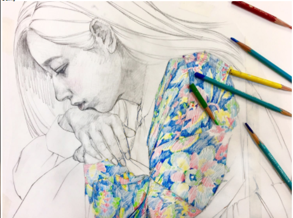

About Me
Background Introduction
My name is Xiaoyu Ding. I am came from China and 2021 is 8th year that I have been living in Canada. As my previous life in China, I already had a bachelor's degree in art design. However, I wanted to challenge myself in a new field when I decided studing inAlgonquin College so I studied computer programmer at Algonquin College and got my diploma. During the two years of study experience, I felt that writing code was not very interesting. According to my experience, I decided to study the current course. I'm very enjoying my studies so far and I think I've finally found the right field for me. In this semster I started learning HTML and CSS I belive thoese things gona be very cool for me.
My hobbies
- Skating
- Skating is the use of skating shoes on the ice to walk or race and other sports. In the Winter Olympic Games, skating as a separate major event, under the competition category of short track speed skating, speed skating and performance of the category of figure skating 3 sub-events.In addition, the use of special roller skates in the smooth ground forward movement known as "roller skating", that is, roller skating, also known as roller skating.
- Drawing
- On a technical level, painting is an action of adding color to a surface as a supporting surface. The surfaces can be paper, canvas, wood, glass, lacquer, or concrete, and the tools used to paint can be brushes, knives, sponges, even paint sprayers, toothbrushes, fingers, and so on.
My Favorite Inspirational Quotes
-
Best Way To Get Started Is To Quit Talking And Begin Doing. - Walt Disney
-
Speak less than you know; have more than you show.- William Shakespeare
-
We become what we think about.- Earl Nightingale